|
| 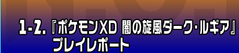 |
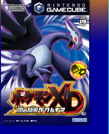 |
ゲームキューブソフト
発売予定日：2005年８月４日
希望小売価格：5,800円（税込）
ジャンル：ＲＰＧ
プレイ人数：１〜２、４人用
|
公式ページへ
|
|
ポケモンゲーム最新作は、ゲームキューブソフトで登場。ゲームキューブでの発売は、以前リリースされた『ポケモンコロシアム』以来となります。今回の魅力は、ゲームキューブならではの性能を活かした美しく迫力のある映像と音、そして骨太なシステムとストーリー。従来のシリーズとはまた異なる、新しいポケモンの世界をご堪能あれ！
|
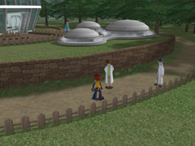
今回の『ポケモンＸＤ 闇の旋風ダーク・ルギア』は、物語性が強いということで、そのストーリーに期待が高まります。『ポケモンコロシアム』でも舞台になった、オーレ地方が今回も冒険の舞台です。
お母さんと妹と３人で生活している主人公のお供には、かわいいイーブイがついてきてくれます。
ポケモンシリーズは初心者も安心、毎回の超・親切設計がポイントですが、今回もそれは健在。
これは極端な例えですが、用語やルールがサッパリわからない人がいきなりスタートしても、ゲーム中に単語の解説を知ることができます。すぐにゲームに取りかかりたい人にも行き詰まりがない、というわけです。
『Ｐ★ＤＡ(ポケモン・デジタル・アシスタント)』は、ストーリーが始まってすぐに手に入る携帯マシンですが、これでメールをもらう事ができるし、対戦したポケモンの弱点などバトルのコツが一目でわかります。本当にありがたい便利グッズなので、使いこなし方は早めに覚えておきましょう。
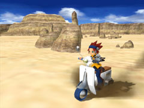
冒険の始まりを紹介しましょう。主人公の妹であるマナちゃんの姿が見えないのでお母さんのリリアが少し心配しています。
ということで、マナちゃんを探しに行くことになりました。
マナちゃんを見つけて研究所に帰ると、長年の研究の成果である"スナッチマシン"が完成していました。悪いトレーナーからダークポケモンを奪うことができる、"スナッチ"が可能になったわけです。
|
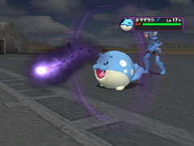
ダークポケモンとは、悪の組織によってココロを閉ざされて戦闘マシンのようになってしまったポケモンのことです。
このダークポケモンは、通常では使わないおそろしい"ダークわざ"を繰り出してきます。
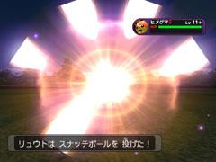
"スナッチ"とは、そんなダークポケモンを悪の組織のトレーナーから奪い返す事で、救い出すことのできる唯一の方法なのです。
ある程度HPを減らし、眠らせるなど状態異常にさせるとスナッチしやすくなります。(元気な状態でスナッチしようとしても、なかなかつかまりませんよ！)。
スナッチをして奪い返しただけでは、ダークポケモンを救ったことにはなりません。奪い返したポケモンのココロを開いていく"リライブ"もしてあげる必要があります。
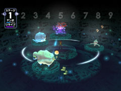
ダークポケモンはスナッチした主人公と行動を共にしたり、特別などうぐを使うことで"リライブ"がすすみ、段々とココロを開いていきます。
今回新しい"リライブ"の方法として、"リライブホール"というシステムが登場、多くのダークポケモンを同時にリライブしていくことができるようになりました。
リライブホールでは、ダークポケモンを仲間のポケモンと交流させてリライブをすすめることができるのです。
これで悪の組織が大量にダークポケモンをつくり出しても救い出すことができそうです。
|
ポケモンといえばやはりバトルが醍醐味、という人も多いでしょう。
ということで、バトル大好きな人には『バトルディスク』がとってもオススメ。
冒険の途中で手に入れるディスクを使い、「２ターン以内に相手を倒す」といった条件つきのバトルを楽しめる、いわばミニゲームのようなもの。各ポケモンの相性や、わざの効果を考えてバトルを進めないとクリアできないので、持てる知識とテクニックを駆使して闘うのだ！
バトルに失敗しても攻略のヒントがもらえるので、何度も挑戦するうちにテクニックが身に付いてしまう、というありがたい面もあります。
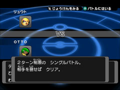
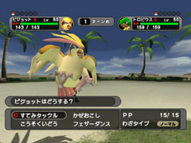
|
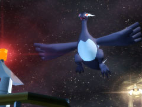
ということで、まだまだ先が長い『ポケモンＸＤ 闇の旋風ダーク・ルギア』ですが、本格的ＲＰＧと看板を出しているだけのことはあって、ボリュームがすごいことになっています。
タイトルにもなっている『ダーク・ルギア』に会えるのは、一体いつの日か…。
でも、まずはココロを閉ざされたかわいそうなポケモンたちを助け、先を目指して冒険していきましょう。
とにかく要素が盛りだくさんで、プレイするたびに新鮮な感動があります。
だから、誰でも楽しく、そして奥深いポケモンの世界に引き込まれるはずですよ！
|
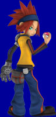

|